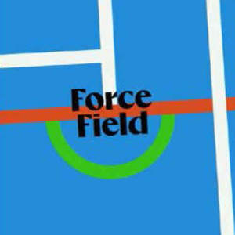

Trade Mark Journal No.2025/017 25 April 2025
UK00004185010 6 April 2025 (9,38,41,45)

- Class 9
- Downloadable mobile applications featuring training programmes, instructional videos, and interactive content for sports injury prevention and concussion mitigation training in contact sports and athletic performance tracking; Downloadable digital content, namely instructional videos, tutorials, and exercise programs focused on physical training and concussion awareness; Downloadable audio and video recordings pertaining to sports injury prevention and movement training; Downloadable software for monitoring, analyzing, and providing feedback on athletic performance, including metrics on strength, balance, and flexibility; Downloadable training modules for coaches, players, and parents in the field of rugby and other contact sports and sports health education; Augmented reality and virtual reality software applications for simulating sports training scenarios and injury prevention exercises; Downloadable electronic publications, including e-learning materials, guides, and handouts related to contact sports safety, e-books, manuals, and guides, in sports training, safety, and injury prevention; Software for creating personalized workout plans and training schedules; Software applications featuring progress tracking, scheduling, habit-building, and gamification elements for athlete performance and safety; Pre-recorded digital media, namely DVDs, USBs, and downloadable files containing injury mitigation content; Interactive downloadable content for guided physical exercise and training instruction; Downloadable motion-based training protocols and guided movement frameworks; Downloadable graphics and media used in mobile and web-based concussion training programs; Applications featuring gamified fitness challenges and leaderboards; Pre-recorded DVDs, CDs, and digital media featuring instructional videos, documentaries, and audio content on sports training and injury prevention; Downloadable audio and video recordings, podcasts, and webinars related to sports health, fitness, and safety; Digital templates and resources for coaches and trainers; Wearable activity trackers and sensors for monitoring physical activity, biomechanics, and providing feedback on athletic performance; Smart clothing and gear embedded with sensors to track and analyse movement, posture, and physiological data; Protective sports equipment, including headgear and mouth guards, incorporating technology for impact detection and injury prevention; Heart rate monitors and biometric measurement devices; GPS devices for tracking running routes and distances; Apparatus and instruments for measuring, signaling, and checking physical performance metrics, such as heart rate monitors, pedometers, and accelerometers; Educational and teaching apparatus, including simulators and models for demonstrating sports techniques and safety protocols; Virtual reality headsets and equipment for immersive sports training experiences; Electronic devices for conducting fitness assessments and body composition analysis; Software and hardware for motion capture and analysis; Downloadable mobile app modules specifically tailored for schools, clubs, and team use; Software for live-streaming training sessions or remote coaching integration; Downloadable educational toolkits for concussion awareness campaigns; Downloadable onboarding guides and orientation tools for new athletes and guardians; Software for parent, coach, and player multi-access platform with administrative controls; AI-based performance feedback modules for technique correction or movement quality; Downloadable dashboards for tracking user engagement, completion metrics, and performance trends; Software plug-ins or APIs for integrating ForceField training metrics with third-party sports analytics platforms; Downloadable in-app assessments and self-evaluation questionnaires tied to training modules; Software enabling automated content updates and push notifications for new exercises or training content; Interactive tutorials and gamified learning interfaces using haptics or sensor-based inputs; Downloadable software bundles for licensing to third-party educational or coaching institutions; Downloadable software for administering virtual assessments and generating athlete risk profiles; Downloadable interactive feedback systems for post-session analysis and adaptive content delivery; Software and hardware kits bundled with physical props for educational use (e.g. neck resistance bands, balance boards, etc.); Blockchain-based digital certificates or badges for course completion and training compliance; Mobile app integrations enabling livestream access, dual-user tracking, and team training dashboards; Downloadable video templates and production frameworks for white-labelling the ForceField model; Software for athlete-coach messaging, session feedback, and communication tracking within training apps; .
- Class 38
- Providing online forums and discussion groups for sharing information and experiences related to sports health and safety.
- Class 41
- Educational services, namely conducting programs in the field of sports safety and injury prevention; Providing online non-downloadable instructional videos for concussion mitigation and injury prevention; Delivery of structured digital training programs focused on physical resilience in contact sports; Educational services featuring movement training for young athletes; Coaching and mentoring services in the field of rugby training and movement safety; Providing a website featuring educational information in the field of concussion prevention and physical health; Development and provision of training courses for sports clubs, schools, and academies; Conducting virtual and live training sessions, seminars, and workshops on physical safety in sports; Distribution and delivery of gamified educational challenges and rewards systems for player engagement; Educational consultancy in the area of athlete development, recovery, and physical conditioning; Provision of online and in-person training courses in sports injury prevention, concussion mitigation, and athletic performance enhancement; Conducting workshops, seminars, and webinars on sports health, safety, and fitness; Development and dissemination of educational materials, including manuals, guides, and articles, in sports safety and training.; Providing non-downloadable videos, audio content, and podcasts featuring exercise routines and training tips related to sports injury prevention; Organisation and hosting of conferences and symposiums focusing on sports health education and injury prevention strategies; Offering certification programmes for coaches and trainers in sports safety and injury prevention; Production and distribution of multimedia content, including documentaries, films, and television programmes related to sports training and safety; Providing online non-downloadable publications, such as blogs, magazines, and newsletters, featuring content in sports health and fitness; Organisation of sporting events, competitions, and exhibitions for educational and entertainment purposes; Hosting podcasts and talk shows featuring discussions on sports safety, athlete experiences, and expert interviews; Arranging and conducting of virtual and live fitness challenges and events; Providing virtual reality experiences related to sports training and safety education; Personal coaching services focusing on sports performance, injury prevention, and rehabilitation; Providing facilities and equipment for sports training, practice sessions, and fitness assessments; Conducting fitness classes, boot camps, and group training sessions emphasizing strength, balance, flexibility, and injury resilience; Developing and implementing personalized training programmes tailored to individual athlete needs and goals; Offering virtual personal training sessions and fitness consultations; Providing online subscription-based fitness programmes and workout plans; Providing expert information, consultancy, and advisory services in sports training, injury prevention, and athletic performance; Consultancy services related to sports coaching methodologies, team management, and player development strategies; Advising educational institutions, sports organizations, and clubs on implementing effective sports safety programmes and protocols; Offering ergonomic assessments and recommendations for sports facilities and equipment; Providing psychological coaching and mental resilience training for athletes; Production and distribution of podcasts and talk shows on sports safety and injury prevention; Providing virtual reality experiences related to sports training and safety education; Offering online coaching certification programmes for digital delivery platforms; Organisation and facilitation of peer-to-peer learning groups and coach networking events; Curating and hosting online challenges and gamified wellness events for youth athletes; Design and delivery of asynchronous, pre-recorded sports safety micro-courses for self-paced learning; Providing digital learning pathways for injury prevention based on age, sport position, or role (e.g. coach vs player); Interactive workshops on family and caregiver education around concussion mitigation in sports; Developing and hosting digital onboarding journeys for athletes, guardians, and coaches in contact sports; Design and delivery of age-specific concussion education curricula for primary, secondary, and academy levels; Development of e-learning academies for institutions integrating injury mitigation into sports curricula; Provision of training programmes tailored for neurodiverse or differently-abled athletes to improve coordination and safety in sport; Creation and delivery of educator certification programmes in sports safety, neuromechanics, and breathwork integration; Offering train-the-trainer programmes for sports bodies, schools, and clubs for mass deployment of ForceField methodology; Providing ongoing professional development (CPD) courses for coaches in athletic resilience and safety techniques; Creation and facilitation of interactive knowledge banks, case libraries, and best-practice resources in injury prevention; Organisation of global educational campaigns, challenges, or month-long themed series on injury mitigation or movement literacy; .
- Class 45
- Licensing of training programmes and educational content to schools, rugby clubs, and governing bodies; White-label licensing of sports safety and performance training methodologies; Licensing of franchising concepts in relation to sports safety and performance training methodologies.
J2G2 Limited